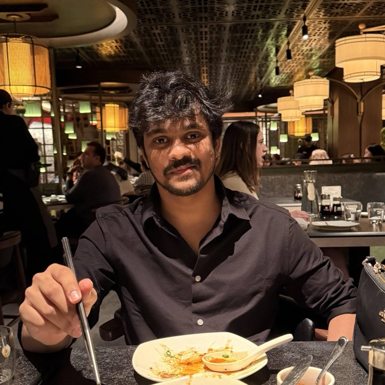

Suhas Morisetty
MS in Computer Science · Columbia University
I work on language model inference, information retrieval, and computer vision. I’m pursuing my master’s at Columbia University, with graduation expected in December 2026.
Most recently, I was an AI Engineering Intern at Capital One, working on workload-aware KV cache eviction for LLM serving. Before that, I worked on generative imaging at Adobe and retrieval systems for Bing Ads at Microsoft.
I completed a dual degree in Electrical Engineering & Data Science at IIT Madras. My research there on low-light stereo image restoration led to a publication at WACV 2023.

News
- Expected
Expected completion of my MS in Computer Science at Columbia.
Completed my AI Engineering internship at Capital One, working on KV cache eviction and LLM serving.
Joined Capital One in New York as an AI Engineering Intern.
Joined Adobe as an Applied Scientist, working on generative imaging and creative tools.
My research on dark stereo image restoration led to a WACV 2023 publication.
Joined Microsoft as a Data and Applied Scientist on Bing Ads.
Completed my dual degree at IIT Madras.